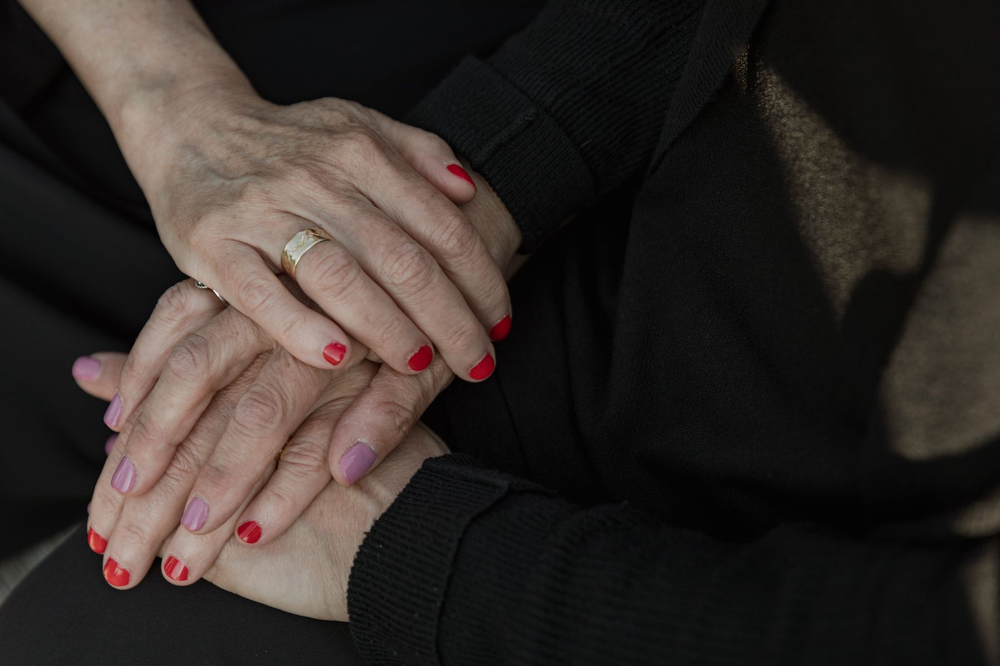

01
Personas y contextos
Atención a la víctima y situaciones de vulnerabilidad
Orientación frente a experiencias de victimización y contextos que requieren escucha, evaluación y acompañamiento responsable.